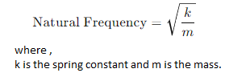
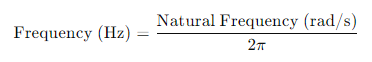

COEP Technological University
Select Accelerometer Type :
--- Select Type ---
Capacitive MEMS Accelerometer
Piezoelectric Accelerometer
PROCEDURE
00
:
00
:
00
PROCEDURE
Basic Knowledge
Read and understand all instructions and questions provided
Answer all questions and click on the "Submit Test" button
Upon successful completion, click on the "Next Level" button which will appear in place of the "Submit" button
Configuration
Select Accelerometer Type:
Choose the type of accelerometer required for the experiment
Select Mass:
Choose the desired mass in kilograms (kg) from the available options
Select Mass Displacement:
Choose the displacement value in centimeters (cm)
Select Spring Constant:
Choose the spring constant in Newton per meter (N/m)
Click the "CHECK CONFIGURATION" button to verify the selected inputs
Mimic
Starting the Simulation:
Click on the green "START" button.
Observe the frequency graph that appears on the screen
Calculate the natural frequency (in radians per second, rad/s) using the formula:

Enter the calculated value in the provided textbox and click on the "SUBMIT" button
Convert the natural frequency to frequency in Hertz (Hz) using the formula:

Enter this value in the respective textbox and click on "SUBMIT"
Calculate the acceleration
(in m/s
2
)
based on the readings obtained
Enter the calculated acceleration value in the textbox and click on "SUBMIT"
Click on the red "STOP" button to end the current simulation
Repeat the above steps under Configuration and Mimic a minimum of 5 times to obtain consistent readings
Calibration
After taking 5 readings, refer to the Calibration Graph displayed below the reading table
Use the graph to adjust and verify the accuracy of your readings
Now select another type of accelerometer
NOTE: Follow steps of "Configuration", "Mimic" for another type of accelerometer
DIAGRAM
BASIC KNOWLEDGE


 COEP Technological University
COEP Technological University
COEP Technological University
COEP Technological University